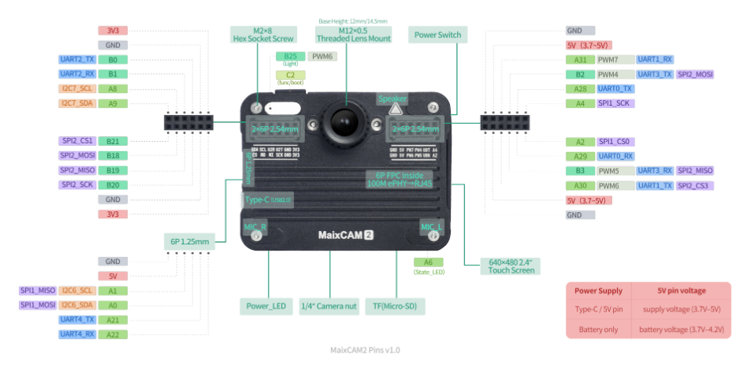
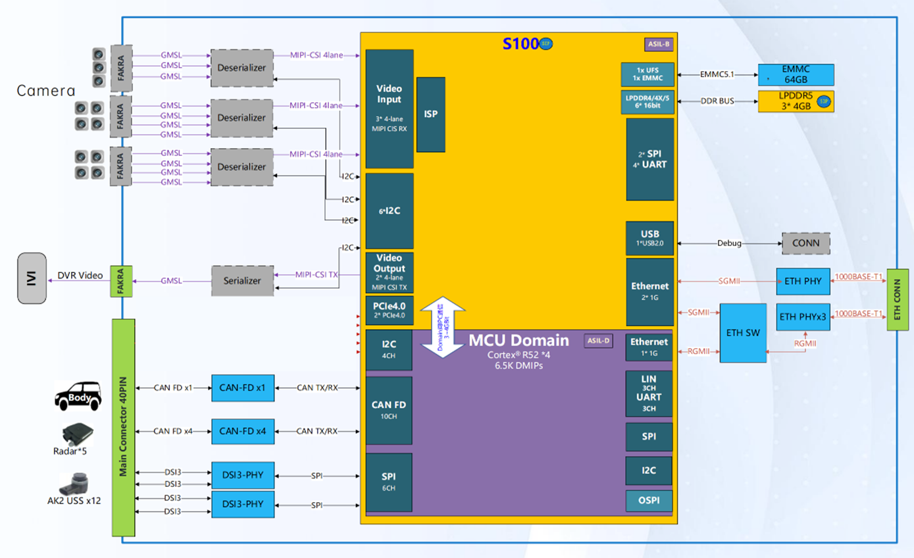
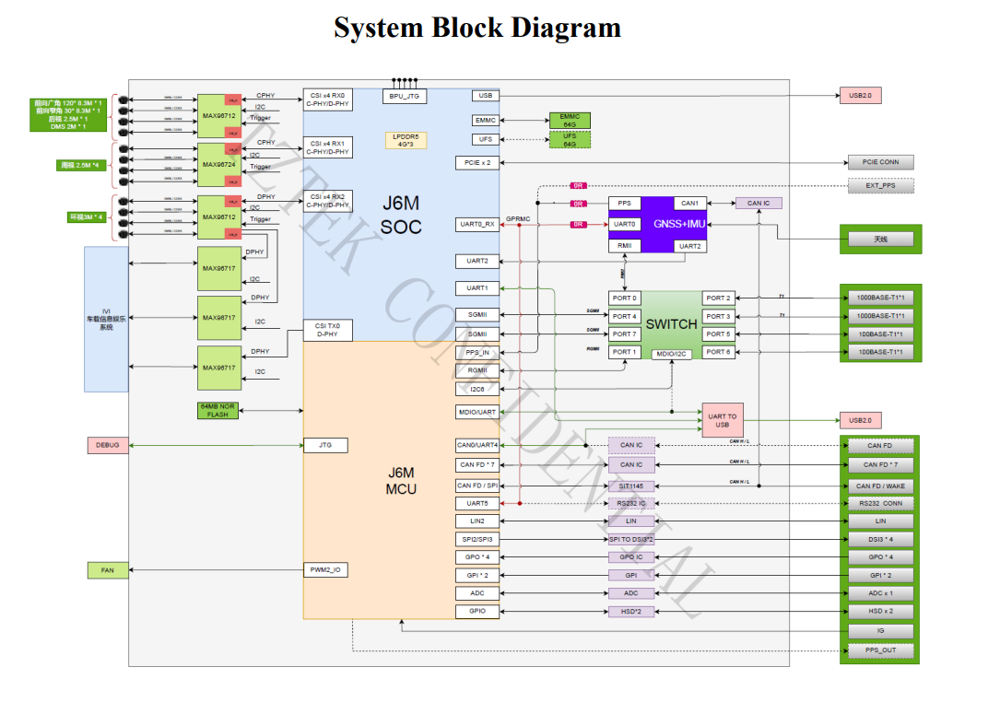

| Compute | |
|---|---|
| SoC | Axera AX630C |
| CPU (big) | 2× ARM Cortex-A53 @ 1.2 GHzruns Ubuntu Linux |
| CPU (small) | RISC-V 32-bit E907runs RT-Thread |
| NPU | 3.2 TOPS @ INT8 · 12.8 TOPS @ INT4 |
| AI throughput | YOLO11n 640×640 up to 113 FPS |
| Memory / storage | |
| RAM | 1 GB or 4 GB LPDDR4 |
| Storage | 32 GB eMMC + microSD slot |
| Vision / display | |
| Camera | Up to 4K (8 MP) @ 30 fps4-lane MIPI CSI |
| Display | 2.4″ HD IPS touchscreen (640×480) |
| Codec | H.264 / H.265 / MJPEG4K encode · 1080p decode |
| I/O & connectivity | |
| Wireless | Wi-Fi 6 + BLE 5.4 |
| Audio | 2× silicon mics + 1 W speaker |
| Pins | PMOD (20 IO), I2C, SPI, UART, ADC, PWM |
| Sensors | 6-axis IMU + RTC (battery-backed) |
| Physical | |
| Power | USB-C + Li-ion battery management |
| Dimensions | 66.5 × 50 × 21.2 mm1/4″ tripod mount |

| Compute | |
|---|---|
| AI throughput | 80 TOPS (total) |
| MCU domain | 4× Cortex-R52 (6.5K DMIPS)ASIL-D, lockstep |
| Memory / storage | |
| RAM | 12 GB LPDDR53 × 4 GB configuration |
| Onboard storage | 64 GB eMMC 5.1 |
| Vision / perception | |
| Camera input | 8-channel via GMSL / FAKRA |
| Video input | 3 × 4-lane MIPI CSI RX |
| Video output | 2 × 4-lane MIPI CSI TX |
| Connectivity | |
| Ethernet | 2 × 1G internal + 1000BASE-T1 support |
| CAN bus | 10-channel CAN FD |
| Other I/O | 6× I2C · 2× SPI · 4× UART · USB 2.0 · LIN |
| Environment / safety | |
| Operating temp | −40°C to 85°Cautomotive grade |
| Safety standards | ASIL-B (SoC) · ASIL-D (MCU domain) |
| Software / physical | |
| Compatibility | Full-stack ONNX support, SDK accessthird-party model deployment |
| Dimensions | 250 × 240 × 60 mm |

| Main SoC | |
|---|---|
| Processor | Horizon Journey 6M (J6M) |
| CPU (application) | 6× ARM Cortex-A78AE137K DMIPS |
| BPU (AI engine) | 128 DL TOPSBayes architecture |
| GPU | 2× G78AE100 GFLOPS |
| Safety MCU | |
| Processor | 4× Cortex-R526.5K DMIPS, lockstep |
| Internal memory | 6 MB SRAM |
| Memory / storage | |
| RAM | 12 GB LPDDR5 |
| Onboard storage | 64 GB eMMC |
| Vision / perception | |
| Camera support | Up to 12 GMSL cameras |
| Video codec | 4K @ 90 fps (H.264 / H.265 / JPEG) |
| ISP | 2× C78AE2.4 Gpix/s |
| Connectivity | |
| Networking | 2× 1000BASE-T1 ethernet |
| Vehicle bus | 7× CAN FD |
| Other I/O | LIN · RS232 · 4× DSI3 · GPIO · ADC · PCIe U.2 |
| Environment | |
| Cooling | Air or water cooling options |
| GNSS + IMU | Built-in (optional configuration) |
